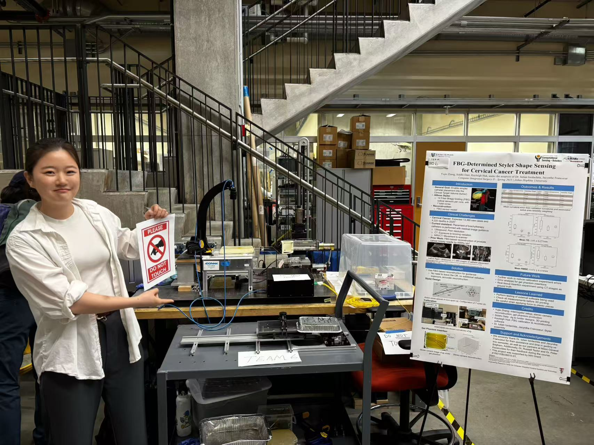
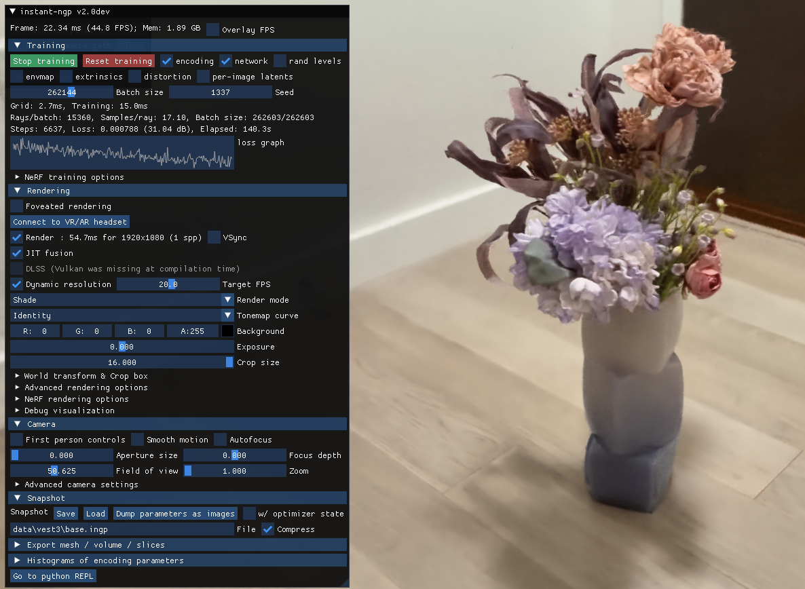

😎 关于我
你好！我是张郁洁（Prenda）——约翰斯·霍普金斯大学机械工程硕士在读生， 研究方向聚焦于机器人学、计算机视觉与智能控制的交叉领域。
我的学术与科研历程始终围绕解决医疗及仿生机器人领域的复杂问题。 擅长图像处理、运动控制算法设计，以及基于 ROS 的机器人系统集成。 在过往项目中，我曾利用立体视觉与 OpenCV 构建实时深度估计系统， 基于贝塞尔曲线为自主导航开发轨迹规划算法， 并搭建完整的 ROS 传感器融合与可视化流水线。
目前，我正在研究基于光纤布拉格光栅（FBG）的手术工具形状感知课题， 使用 Python 与 ROS、3D Slicer 进行高频数据采集与实时三维可视化控制。 我热衷于将鲁棒控制策略与智能感知相结合，构建能在非结构化环境中可靠运作的系统。
我也热爱开放协作与跨学科问题求解——如果你正在做有趣的事情，欢迎与我联系！💫

💻 工作经历
软件工程师 | 美敦力 Hugo 手术机器人系统
2026.01 - 至今美国康涅狄格州 North Haven
- 开发并验证跨平台自动化工具（QNX、Linux、Windows），支持机器人系统部署及现场服务流程，显著降低部署时间与人为操作错误。
- 构建机器人系统升级自动化测试框架，包含镜像部署、外设校验及基于 CyberArk 的认证流程，提高制造与现场服务场景下的测试覆盖率与系统可靠性。
- 编写系统验证与发布文档，融入 Agile 开发流程，确保软件升级过程的可追溯性与合规性。
- 参与基于大语言模型（LLM）的机器人系统版本变更影响分析工具开发：提取代码差异（diff）并构建结构化输入，通过安全 API 调用模型；基于函数调用机制实现自动化分析，并生成自然语言结果。
- 基于 Python 构建自动化评估框架，对模型输出与标准答案进行一致性与准确性评估，建立 Benchmark 和评测工具平台，提升 AI 辅助分析系统的稳定性与可靠性。
助教 | 计算机辅助手术系统 | 约翰霍普金斯大学
2025.08 - 2025.12美国巴尔的摩
- 开发自动化评测工具，用于评估学生编程作业中手术导航算法实现，包括三维配准、电磁跟踪标定及坐标变换等核心模块。
- 在噪声与扰动条件下分析算法性能，识别医疗机器人标定与跟踪系统中的典型失效模式。
- 指导验证与测试方法设计，包括合成数据生成与定量性能评估流程，提升算法评测的系统性与可靠性。
控制系统研究助理 | 中国科学院深圳先进技术研究院
2024.03 - 2024.07- 课题方向为利用基于步态的自适应振荡器，有效预测辅助步行步态相位的外骨骼机器人设计。
- 优化基于 Matlab Simulink 平台的仿真阻抗控制系统，集成扰动观测器等模块，以减小外骨骼接触地面瞬间冲击力对驱动电机振荡的影响。
📋 科研经历
面向机器人操作的部件感知可供性学习
2025.08 - 2025.12项目成员
- 面向机器人操作中物体可供性（affordance）理解问题，构建基于 PartNet-Mobility 数据集的部件级可供性学习框架，通过融合视觉与语言信息，实现机器人对细粒度功能区域的识别能力。
- 基于 Blender Python API 搭建多视角数据生成流水线，对 3D 物体进行标准化处理与多角度渲染，生成 RGB 图像及对应的部件级语义分割图，并构建 part-level 标注映射关系用于监督学习。
- 参与设计基于大语言模型的可供性描述生成方法，从物体部件层级结构自动生成自然语言动作描述，并构建"动作-部件"映射关系，实现弱监督可供性标签生成。
- 参与设计从分割图到可供性热力图（affordance heatmap）的自动生成流程，通过融合多部件 mask 生成空间分布标签，用于训练语言条件下的可供性预测模型。
基于 FBG 的 3D 实时光纤传感针形状感知（宫颈癌辅助治疗）
2024.12 - 2025.07项目负责人 · 高级医疗仪器与机器人研究实验室 · 约翰斯·霍普金斯大学
项目目标：为基于光纤布拉格光栅（FBG）的导针开发实时三维形状感知系统，实现宫颈癌近距离放射治疗中导管精准无影像穿刺。
课程背景：600.446 Advanced Computer Integrated Surgery II (Spring 2025)，团队：Yujie Zhang、Siddhi Date、Kayleigh Huk，导师：Dr. Iulian Iordachita、Jacynthe Francoeur。
主要成果：完成 FBG 校准与验证实验，Mean Tip Error 1.05 ± 0.277 mm，Mean RMSE 0.472 ± 0.124 mm；通过立体视觉对比流水线与凝胶模型验证感知精度，支持未来自主针头转向研究。
- 面向 MRI 环保与宫颈癌手术穿刺需求，搭建基于光纤光栅（FBG）的 300mm 柔性多芯导针形状感知系统，采用李群模型重建针体沿其长度的曲率与扭转，7 个纤芯、14 个活跃区域、98 个传感点。
- 构建基于 TCP 流的 FBG 光谱处理方法，接入 FBG 解调仪逐次扫描输出，优化谱峰拟合算法，与厂商自动拟合结果交叉验证，确保信号稳定性（低标准差）。
- 完成 FBG 与光学解调器的配置、校准与验证流程设计，将 FBG 输入通道由 4 扩展至 7，采用加权最小二乘法确定校准矩阵，在 XZ/YZ 平面 0°/90° 旋转下验证精度，在仿体组织实验中实现 <2.0 mm 针尖误差。
- 开发基于 ROS2 的穿刺针机器人操作系统，利用协作机器人工具包（CRTK）实现穿刺深度精确控制（150-220mm 插入深度），多次机器人插入实验 RMSE < 2 mm，确保可重复性与可靠性。
- 设计双目立体相机验证平台，采用 ROS camera_calibration 进行 9×11 棋盘标定，实现针在不同插入状态下的三维形态重建与 B-spline 平滑，用于独立验证基于 FBG 重建针形状曲线的精度（2.0/2.5 1/m 管道验证误差 < 1 mm）。
振动驱动胶囊机器人设计与性能验证
2023.01 - 2023.12项目负责人 · 深圳仿生机器人与智能系统重点实验室 · 2023 IEEE ROBIO
- 设计面向结肠道检查的欠驱动振动微小型自主机器人，在有限环境限制下实现多自由度控制及运动。
- 搭建振动电机测试平台，开展力传感器的多档输出测试，完成输出力的力学建模与分析，为后续电机输出控制运动提供理论基础。
- 搭建基于 STM32 开发板的电机控制模块，完成电机驱动模块的软件编程，实现速度控制。
- 优化基于 MATLAB 的摄像头实时追踪系统，采集并分析机器人速度、方向稳定性与控制精度，实现对运动性能的评估与优化。
履带驱动结肠镜机器人及自主导航
2022.01 - 2023.01项目参与者 · 深圳仿生机器人与智能系统重点实验室 · 2024 IEEE ICRA · 专利
- 面向结肠非结构化、弱纹理、弱空间感知环境，构建微小型履带机器人硬件系统，结合深度信息开发路径规划算法，实现肠道内内窥镜自主导航。
- 使用两个微型单目相机搭建双目系统，通过贝塞尔曲线轨迹规划算法与 OpenCV 深度估计模块，根据皱襞几何特征判断移动方向，结肠褶皱检测精度达 88.11%。
🚀 精选项目
我的研究终极目标是通过视觉信息处理与简单驱动机构相结合，实现机器人运动的精准导航。 目睹亲人承受胃肠道疾病与手术恢复之痛，我深切认识到精细手术机器人与外骨骼对改善医疗体验的重要性。 我立志设计出让手术更安全、更精准、更微创的医疗机器人。
3D Reconstruction with NeRF
计算机视觉 / AI
基于 COLMAP + NeRF + Gaussian Splatting 构建 3D 重建 pipeline， 使用多视角数据实现 novel view synthesis，PSNR ≈ 31 dB，支持新视角渲染与质量评估。
⭐ 技能
编程语言
框架与工具
系统能力
✨ 相关课程
- 基于传感器的机器人算法（A-）
- 磁驱动 MRI 兼容机器人（A+）
- 计算机集成外科（A+）
- 数据结构与算法分析（A）
- 机器学习（A-）
- 嵌入式机器人（A-）
- 机器人建模与控制（A-）
📬 联系我
欢迎通过以下方式与我联系，期待共同探索机器人、医疗创新或任何有趣的想法！